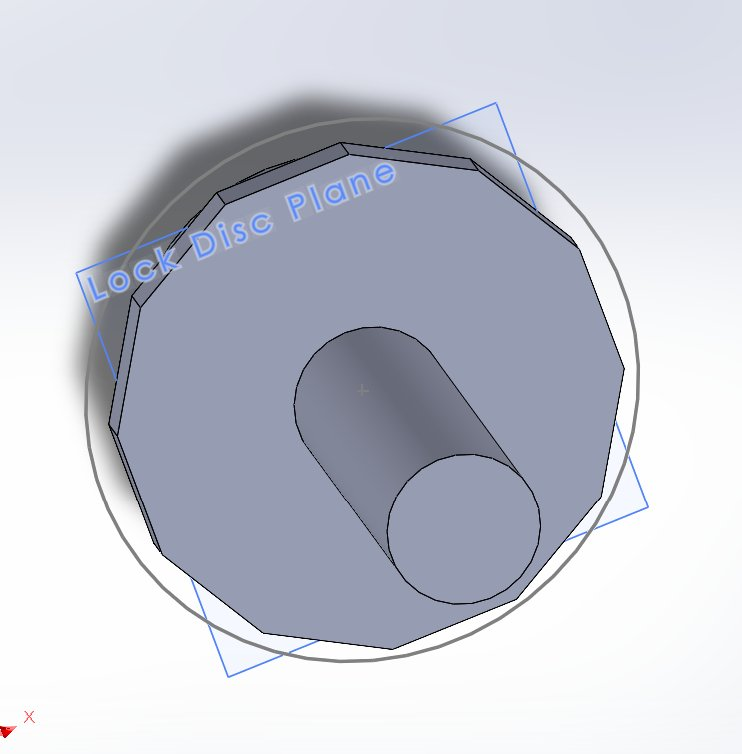
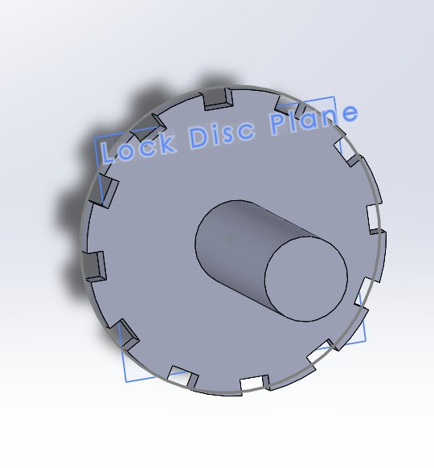
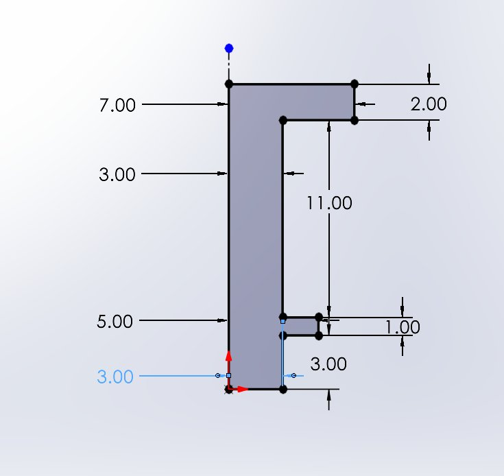
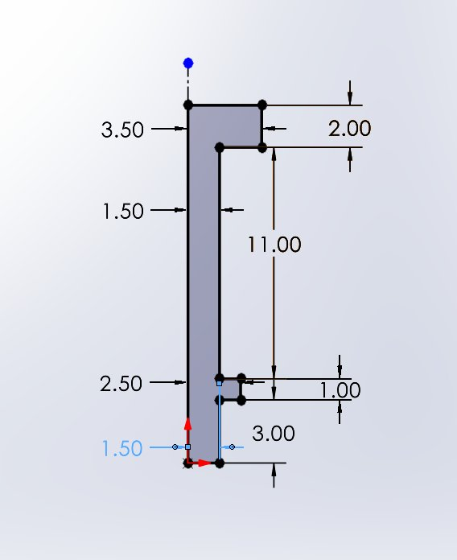
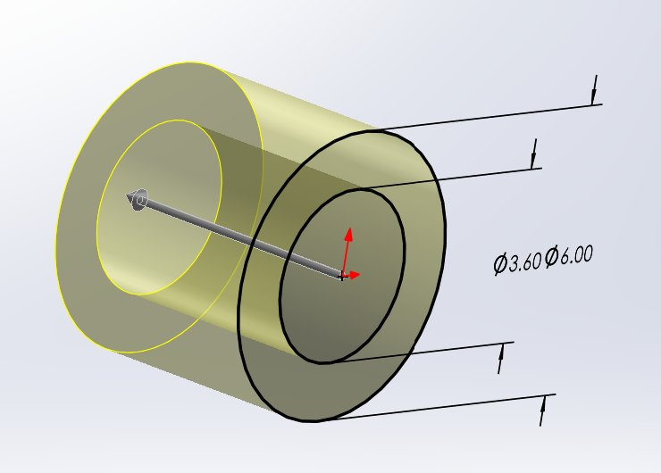
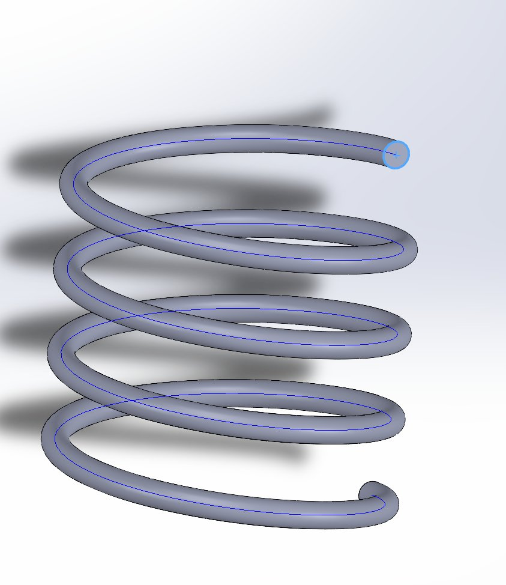
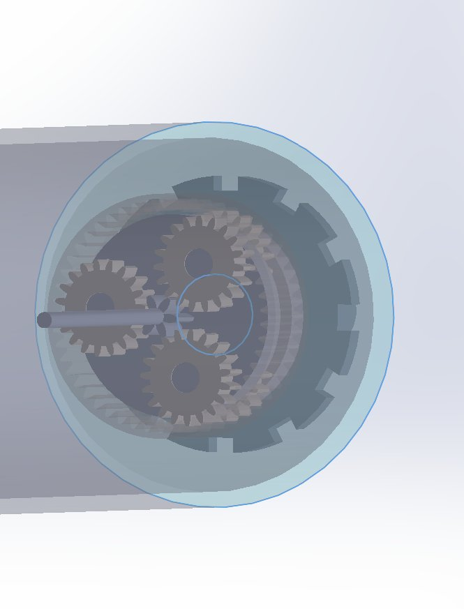
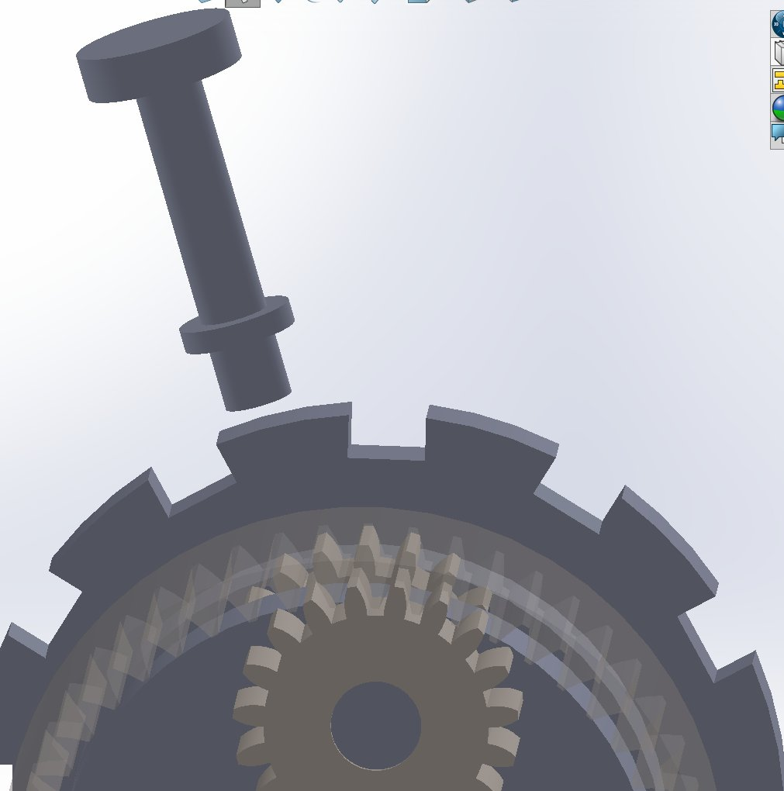
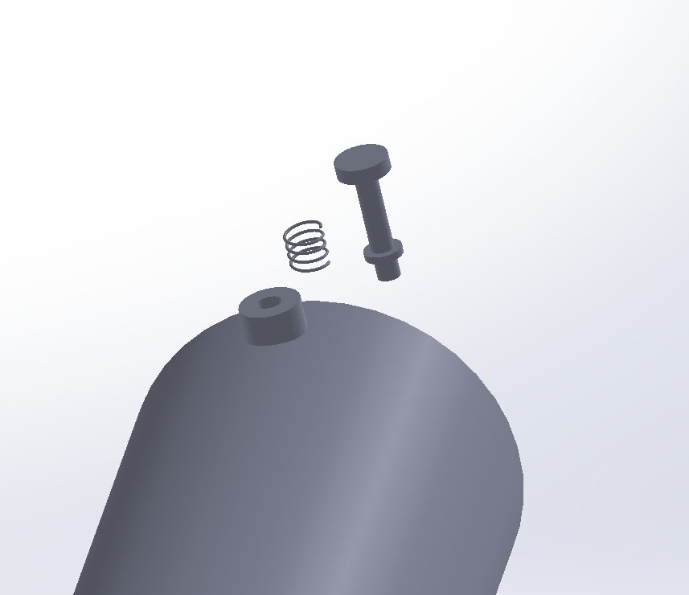

A pin, not a brake
A pin locks by shape, not by friction, so it can't slip. Your finger only has to push it past the spring. Once it's in a notch, the housing holds it, no matter how hard you press.
Mechanical Engineering Design I · Dissection 4 · Nov 2026
We took apart a cordless screwdriver and modelled its planetary gearbox in SolidWorks. Then came the design part: adding a button that locks the output shaft. I designed and modelled it, starting as a total beginner at CAD.

The screwdriver holds bits in a hex socket. Our task was to imagine a collet on the end instead, like a Dremel, so it could grip bits of different sizes. But you tighten a collet by twisting it by hand, and when you twist it, the output shaft just spins along with your hand. It's like trying to open a jar when the lid and the jar both turn.
So I needed to design a button that:
It only has to work when the motor is off. It never has to stop a spinning shaft.
Press the button and a pin slides down into one of 12 notches on a disc fixed to the shaft, so the shaft can't turn. Let go and the spring lifts the pin back out. Try it:
We had just learned about brakes in lecture, so my first thought was a small friction brake. Then I did the math. Your finger can push the button with about 15 N, and a friction brake on this 10 mm shaft turns that into almost nothing:
To hold 1 N·m by friction, you'd have to press with about 670 N. That's roughly the weight of an adult, through one fingertip! So friction was out, and every other decision followed from there:
A pin locks by shape, not by friction, so it can't slip. Your finger only has to push it past the spring. Once it's in a notch, the housing holds it, no matter how hard you press.
The gearbox is 33.6 : 1, so locking the sun gear would only take 0.03 N·m. But then every tiny gear tooth takes the load each time you change a bit. Locking the output means the load skips the gearbox completely.
The force on the pin is F = T / r. A Ø36 disc puts 56 N on the pin instead of 125 N for a small one, and it lets the pin be short and stubby instead of long and bendy.
More notches means less turning before the pin catches (30° at most), but thinner teeth between them. At Ø36 the teeth are still about 6 mm wide, so strength wasn't the limit and convenience won.
Not everything came out right the first time. Here are a few things I had to fix along the way, and what each one taught me.






Before calling it done, I checked that everything actually fits together. To make room for the disc, I also had to move the housing, which meant finding an old mate that was fighting my new one and deleting it.



Writing the assembly steps for a machinist made me notice one more problem. The pin's shoulder and its head are both bigger than the hole, so as one solid part, the button could never be installed! In the real product, the head would be a separate cap, pressed onto the pin after it goes in from inside the housing.
I started this at 2 AM, overwhelmed and not sure where to begin in SolidWorks. A day later I had a working mechanism, with a real spring! A few things I'll keep with me: